Introduction
This vignette provides a high-level overview of all GLEAM modules, the sequence of their functions, and their input and output datasets. An overview of the full pipeline is provided in the GLEAM Overview. Full documentation for each module is available via the module reference pages linked in each section below.
Demographic Herd Simulation Module
See run_demographic_herd_module()
for full documentation.
The demographic herd module simulates herd population dynamics based on reproduction, mortality, and offtake (animals removed from the herd). It estimates the sex–age structure of a herd at demographic steady state, together with population growth and annual offtake. These results provide the herd structure needed for subsequent calculations in GLEAM.
The module assumes that demographic parameters remain constant over time. Under this assumption, the herd eventually reaches a stable sex–age structure, meaning that the proportion of animals in each cohort remains constant, even if the total herd population grows or declines at a constant rate.
The herd is divided into six cohorts according to sex and age:
| Sex | Juvenile | Subadult | Adult |
|---|---|---|---|
| Female | FJ |
FS |
FA |
| Male | MJ |
MS |
MA |
Animals move between age cohorts as they grow older, while reproduction adds new juveniles to the population. Mortality and offtake reduce the number of animals in each cohort.
Although demographic inputs such as mortality and offtake are specified annually, the module performs calculations at a daily time step. Annual rates are converted into daily hazards and transition probabilities, accounting for the competing risks of death, offtake, and survival.
This approach is conceptually based on the steady-state demographic model implemented in Dynmod STEADY1 (Lesnoff, 2013), adapted to daily calculations.
Linking to the non-demographic module
The module also allows a proportion of juvenile animals to leave the demographic pathway and enter the non-demographic pathway.
Two parameters control these transfers:
-
prop_nondemo_fem_juv: proportion of female juvenile flows diverted to the non-demographic pathway. -
prop_nondemo_mal_juv: proportion of male juvenile flows diverted to the non-demographic pathway.
These transfers are recorded in
cohort_stock_annual_nondemographic for the FJ
and MJ cohorts, separately from mortality and offtake.
When both modules are run together using
run_all_herd_module(), the transferred animals become
inputs to the non-demographic module.
For herds without a non-demographic component, set both parameters to
0.
Main outputs
The module returns two datasets:
cohort_level_results contains the
demographic results for each sex–age cohort, including:
-
cohort_stock_size_unscaled: average cohort population over the annual projection. -
cohort_stock_size_scaled: cohort population at the start of the assessment period, consistent withherd_size_total. -
offtake_heads_unscaledandofftake_heads_scaled: annual offtake before and after adjustment to the starting-stock basis. -
offtake_heads_assessment_unscaledandofftake_heads_assessment_scaled: offtake oversimulation_durationbefore and after that adjustment. -
cohort_stock_annual_nondemographic: annual transfers to the non-demographic pathway, where applicable.
herd_level_results contains the
original herd-level inputs and the estimated annual herd growth rate
(growth_rate_herd).
Cohort stock and offtake outputs are provided with both
_unscaled and _scaled suffixes to support
integration with the combined herd module.
Overview of the demographic herd module: functions, inputs, and outputs
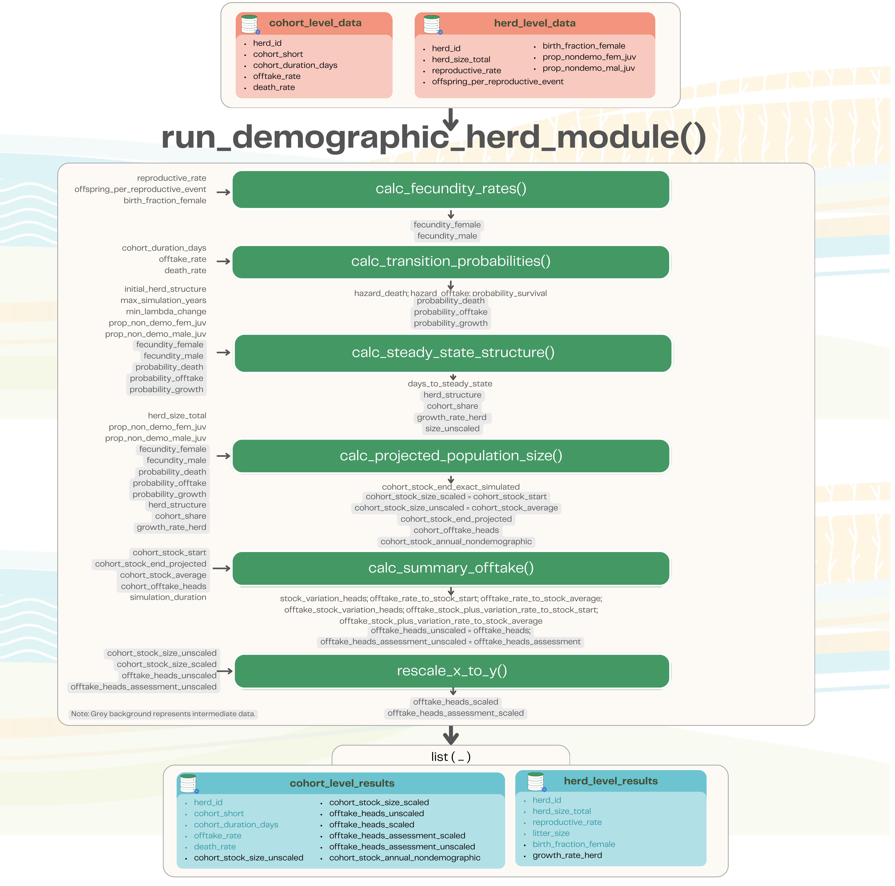
Non-Demographic Herd Simulation Module
See run_nondemographic_herd_module()
for full documentation.
The non-demographic herd module calculates average animal stock and offtake for animals managed through defined productive cycles, rather than through the reproduction and age transitions of a breeding herd.
Unlike the demographic module, which tracks population dynamics across sex–age cohorts, this module follows animals entering a defined productive cycle. It accounts for how long animals remain in each productive phase, their mortality, and their eventual offtake.
The module considers two cohorts:
-
FN: non-demographic female animals. -
MN: non-demographic male animals.
The simulation starts with the annual number of animals entering each non-demographic cohort, specified through:
cohort_stock_fem_annual_nondemocohort_stock_mal_annual_nondemo
These inputs can either be provided directly in
herd_level_data when running the non-demographic module
independently, or calculated from juvenile transfers by
run_all_herd_module() when both modules are used
together.
Each non-demographic cohort follows a productive cycle consisting of:
- Phase 1 (required): Animals enter the first productive phase and remain there for the specified duration.
- Phase 2 (optional): Animals surviving phase 1 move into a second productive phase, if one is defined.
The phases are identified using
nondemo_productive_phase_id. Offtake is assigned to the
final productive phase, and death_rate represents the
mortality fraction over the full duration of a productive phase.
The module can also account for a rest period between productive
cycles, specified through
rest_between_nondemo_cycles_duration.
Productive phase durations
When phase durations are supplied in herd_level_data,
cohort_duration_days is not required for FN
and MN. The module fills it from the herd values, which
overwrite any supplied cohort values with a warning. Missing herd values
fall back to the cohort values. Phase 1 must last at least 1 day; phase
2 and the rest period may be 0.
Annual stock and offtake include animals that entered before the
assessment year. Full productive phases are used even when they extend
beyond 365 days. simulation_duration scales annual offtake
to the reporting period.
Main outputs
The module returns two datasets:
cohort_level_results includes:
-
cohort_stock_size_unscaled: average animal stock before final herd-size scaling. -
offtake_heads_unscaled: annual offtake before scaling. -
offtake_heads_assessment_unscaled: offtake over the assessment period before scaling. - Productive phase identifiers, effective durations, and cycle-related information.
herd_level_results includes the
calculated total productive duration for each non-demographic
cohort:
total_nondemo_fem_duration_daystotal_nondemo_mal_duration_days
These durations exclude rest periods between productive cycles.
Final scaling to a supplied herd_size_total is handled
by run_all_herd_module(). In a mixed run, the
non-demographic results are combined with the demographic results before
scaling. In a non-demographic-only run, the herd-size target is
optional; without it, stock and offtake remain unscaled.
Overview of the non-demographic herd module: functions, inputs, and outputs
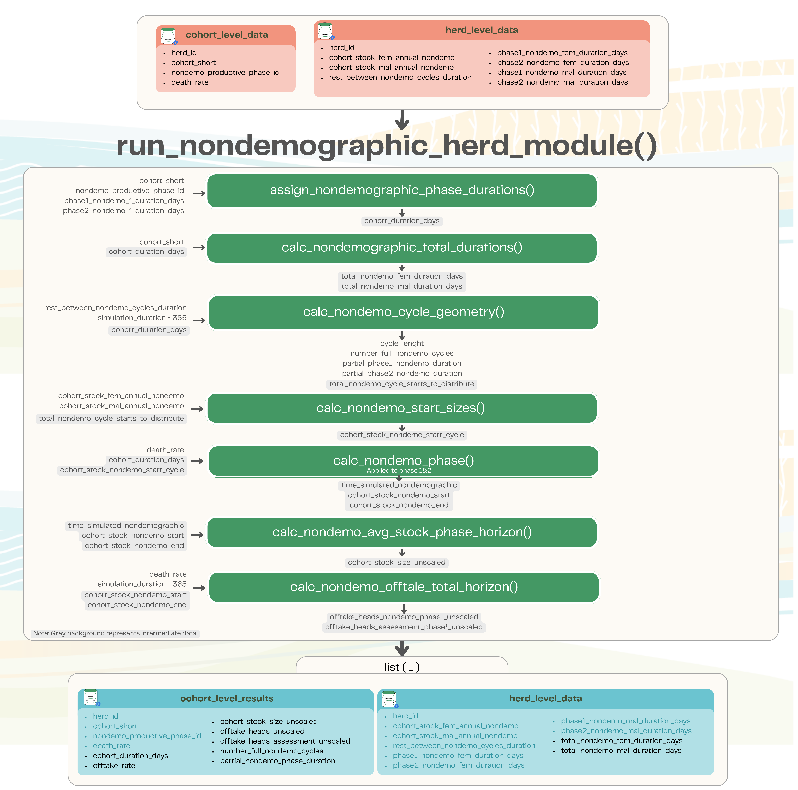
Combined Herd Simulation Module
See run_all_herd_module()
for full documentation.
The combined herd module integrates the demographic and non-demographic simulations to estimate cohort population sizes and offtake across different livestock production systems.
Depending on the characteristics of the production system, the herd may be represented using demographic cohorts, non-demographic cohorts, or a combination of both.
| Mode | run_demographic |
run_nondemographic |
|---|---|---|
| Demographic only | TRUE |
FALSE |
| Non-demographic only | FALSE |
TRUE |
| Mixed demographic and non-demographic | TRUE |
TRUE |
At least one switch must be TRUE.
The module coordinates the two simulation pathways:
- Demographic pathway: Estimates a stable sex–age herd structure, population growth, and offtake based on reproduction, mortality, and age transitions.
- Non-demographic pathway: Estimates average stock and offtake for animals managed through defined productive phases, based on annual entrants, phase durations, and mortality.
When both pathways are included, juvenile transfers calculated by the demographic module are passed to the non-demographic module as annual entrants. The resulting cohort populations and offtake are then combined and, when a total herd size is supplied, scaled to that herd size.
This provides a consistent representation of the animal population across both pathways for subsequent GLEAM calculations.
Practical application
💡 Practical use cases: Herd simulation across livestock production systems
The combination of demographic and non-demographic pathways depends on how animals are managed within the livestock production system, rather than on the livestock species alone. For example:
Demographic only – Beef cow–calf system: A breeding herd may be represented using the six demographic cohorts (
FJ,FS,FA,MJ,MS,MA), covering calves, replacement heifers, breeding cows, and bulls. Reproduction, mortality, age transitions, and offtake determine the stable herd structure.Non-demographic only – Broiler production: Female (
FN) and male (MN) chickens may be represented through defined productive phases, from chick placement to slaughter, without explicitly modelling reproduction or demographic age transitions. Annual animal entries, productive phase durations, and mortality determine average stock and offtake.Non-demographic only – Commercial laying hens: Laying hens may be represented using the female non-demographic cohort (
FN), with phase 1 corresponding to pullet rearing and phase 2 to the egg-laying period. Annual entries, phase durations, and mortality determine average stock, while offtake represents hens removed at the end of their productive cycle.Both pathways – Specialized dairy system with calf fattening: The dairy breeding herd and replacement animals may be represented by demographic cohorts, while selected calves transferred to specialized fattening facilities may be represented by non-demographic cohorts. The demographic module estimates the juvenile flows entering the fattening pathway, and the non-demographic module calculates stock and offtake during the productive cycle.
These examples illustrate possible configurations rather than fixed classifications. The same livestock species may be represented using either pathway or both, depending on the production system and available data.
The following examples use dedicated cohort- and herd-level CSV files
for each execution mode. Load gleam before running them; no
filtering or column selection is needed.
Use case 1: Run both demographic and non-demographic modules
This example runs both modules for all 15 herds. Juvenile transfers
from the demographic simulation supply the annual entrants to the
non-demographic phases; the combined results are rescaled to
herd_size_total.
# Load herd simulation inputs (cohort and herd-level)
herd_all_chrt_dt <- data.table::fread(system.file(
"extdata/run_modules_examples/herd_all_input_chrt_data.csv",
package = "gleam"
))
herd_all_hrd_dt <- data.table::fread(system.file(
"extdata/run_modules_examples/herd_all_input_hrd_data.csv",
package = "gleam"
))
# Run mixed demographic and non-demographic herd simulation
results <- run_all_herd_module(
cohort_level_data = herd_all_chrt_dt,
herd_level_data = herd_all_hrd_dt,
run_demographic = TRUE,
run_nondemographic = TRUE,
simulation_duration = 365,
show_indicator = TRUE
)Use case 2: Run the non-demographic module only
This example contains only FN and MN
cohorts for CHK herds 14 and 15 (layers and broilers). Annual entrants
are supplied directly. The herd file has no
herd_size_total, so stock and offtake remain unscaled.
# Load non-demographic-only herd inputs (CHK layers and broilers)
herd_all_chrt_dt <- data.table::fread(system.file(
"extdata/run_modules_examples/herd_all_nondemo_input_chrt_data.csv",
package = "gleam"
))
herd_all_hrd_dt <- data.table::fread(system.file(
"extdata/run_modules_examples/herd_all_nondemo_input_hrd_data.csv",
package = "gleam"
))
# Run non-demographic-only herd simulation
results <- run_all_herd_module(
cohort_level_data = herd_all_chrt_dt,
herd_level_data = herd_all_hrd_dt,
run_demographic = FALSE,
run_nondemographic = TRUE,
simulation_duration = 365,
show_indicator = TRUE
)Use case 3: Run the demographic module only
This example runs only the six demographic cohorts for all 15 herds.
The dedicated herd file sets both juvenile-diversion proportions to
0.
# Load demographic-only herd inputs (cohort and herd-level)
herd_all_chrt_dt <- data.table::fread(system.file(
"extdata/run_modules_examples/herd_all_demo_input_chrt_data.csv",
package = "gleam"
))
herd_all_hrd_dt <- data.table::fread(system.file(
"extdata/run_modules_examples/herd_all_demo_input_hrd_data.csv",
package = "gleam"
))
# Run demographic-only herd simulation
results <- run_all_herd_module(
cohort_level_data = herd_all_chrt_dt,
herd_level_data = herd_all_hrd_dt,
run_demographic = TRUE,
run_nondemographic = FALSE,
simulation_duration = 365,
show_indicator = TRUE
)Combining and scaling herd populations
For mixed runs, the combined module rescales the average demographic
and non-demographic stock within each herd_id to
herd_size_total. The same scaling factor is applied to
annual offtake and offtake over the assessment period.
Demographic-only runs use the demographic module’s scaled results on
a starting-stock basis. herd_size_total is required
whenever the demographic module is enabled.
For non-demographic-only simulations, annual entrants can be provided directly. These represent the number of animals entering the production system each year and should not be confused with the average number of animals present in the herd.
If herd_size_total is not supplied for a
non-demographic-only run, stock and offtake remain unscaled.
Main outputs
The combined module returns cohort- and herd-level results integrating the two simulation pathways.
cohort_level_results contains:
-
cohort_stock_size: final cohort population sizes, including demographic and non-demographic cohorts where applicable. -
offtake_heads: final annual offtake. -
offtake_heads_assessment: final offtake oversimulation_duration. - Juvenile transfers to the non-demographic pathway, where applicable.
- Cohort and productive phase information required by subsequent modules.
The wrapper removes the intermediate _unscaled and
_scaled columns and returns stock and offtake under these
common names.
herd_level_results contains the
herd-level inputs and calculated indicators, including
growth_rate_herd when demographic simulation is run, and
annual non-demographic entrants and total productive-phase durations
where applicable.
These outputs provide the animal population structure and offtake information required for subsequent calculations of live weights, energy requirements, feed intake, emissions, and livestock production in GLEAM.
run_gleam() uses this wrapper when
has_herd_structure = FALSE. With a supplied herd structure,
both herd simulations are skipped and the pipeline proceeds directly to
weights.
Overview of the GLEAM combined herd module with execution modes, input and output:
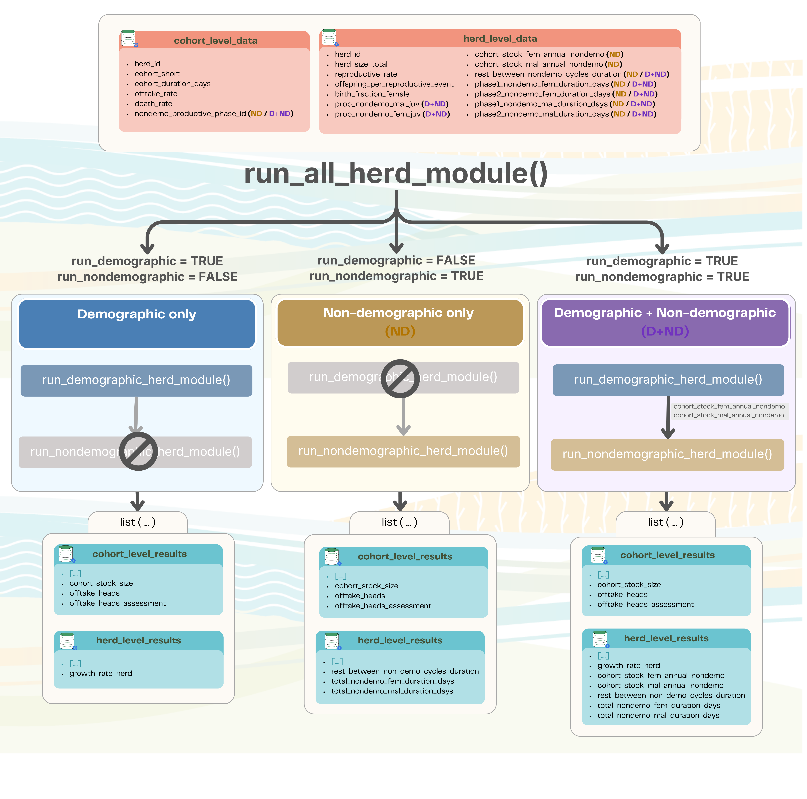
Weights Module
See run_weights_module()
for full documentation.
Computes cohort-level live weight metrics by combining cohort-level inputs with herd-level biological parameters. The module appends cohort weights (initial, potential final, slaughter), then derives average and final live weights accounting for offtake, and finally computes average daily live weight gain over each cohort stage.
Overview of the GLEAM weights module with functions, input and output:
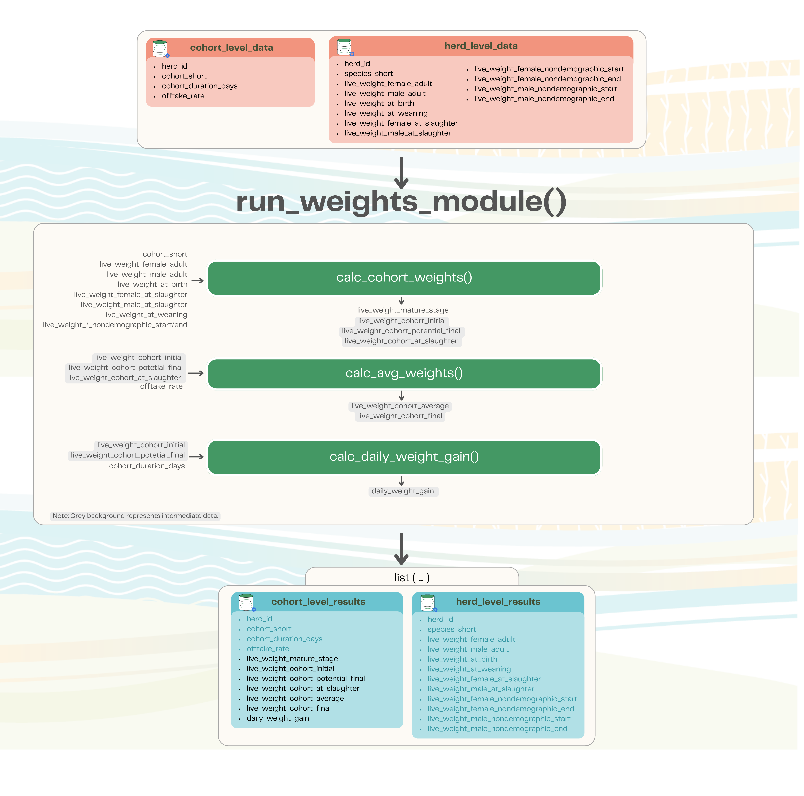
The calculation pipeline consists of the following steps:
-
Cohort-stage weight assignment — herd-level
biological parameters are matched to each cohort row by
herd_idand weights are assigned per life stage usingcalc_cohort_weights(). -
Average and final live weights (accounting for
offtake) — computed using
calc_avg_weights(). -
Average daily live weight gain — computed using
calc_daily_weight_gain().
Ration Nutritional Content Module
See run_ration_quality_module()
for full documentation.
Computes cohort-level diet nutritional metrics — gross and metabolizable energy content, digestibility, nitrogen content, urinary energy losses, and ash content — from cohort-level feed ration composition shares and feed component nutrient parameters.
Overview of the GLEAM ration nutritional content module with functions, input and output:
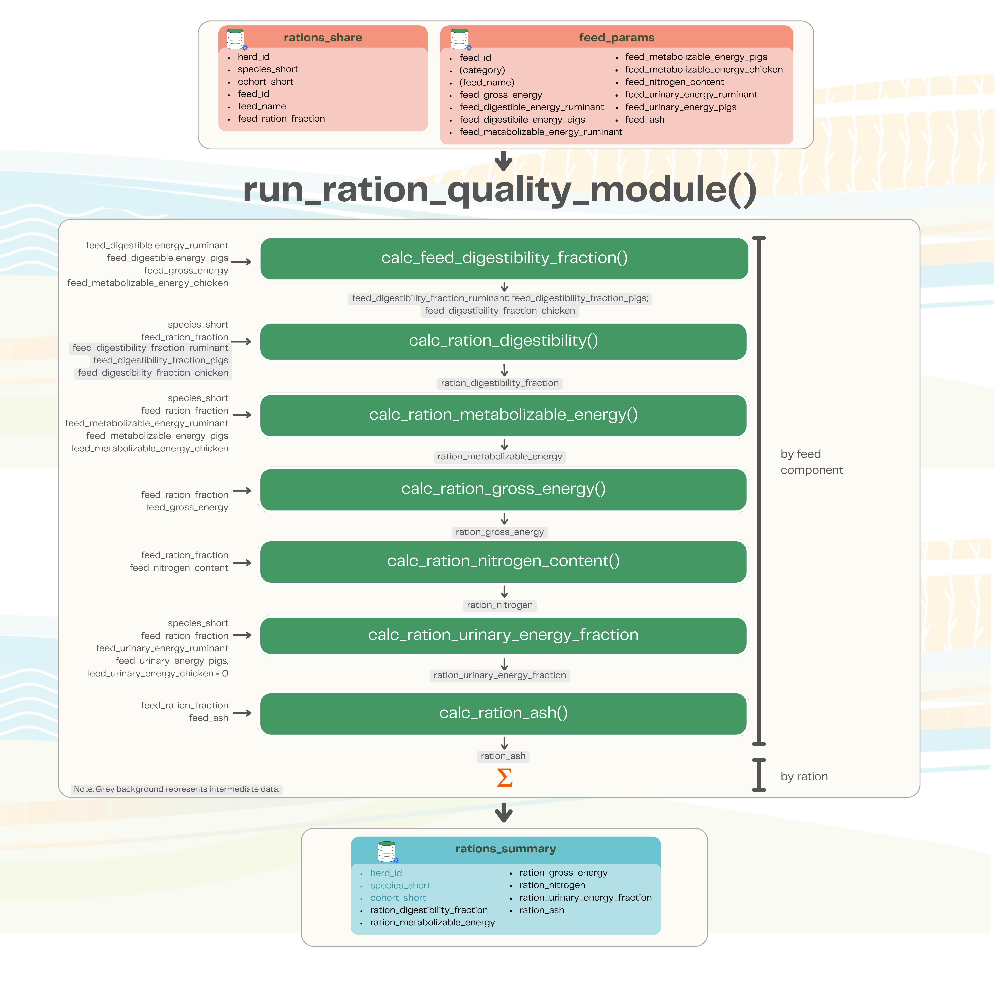
The module joins ration shares with feed parameters by
feed_id, uses species_short for
species-specific lookups, and computes ration-weighted nutritional
metrics by cohort through the following steps:
- Species-specific digestibility fractions are computed from energy
parameters using
calc_feed_digestibility_fraction(). - Contributions of each feed component are computed as ration-weighted
values for:
- gross energy —
calc_ration_gross_energy() - nitrogen —
calc_ration_nitrogen_content() - digestibility —
calc_ration_digestibility() - metabolizable energy —
calc_ration_metabolizable_energy() - urinary energy fraction —
calc_ration_urinary_energy_fraction() - ash —
calc_ration_ash()
- gross energy —
- Component contributions are summed to produce cohort-level diet
metrics, grouped by
herd_id,species_short, andcohort_short, and bynondemo_productive_phase_idwhen supplied inrations_share.
The returned data.table contains
ration_gross_energy and
ration_metabolizable_energy (MJ/kg DM),
ration_nitrogen (kg N/kg DM),
ration_digestibility_fraction,
ration_urinary_energy_fraction, and ration_ash
(kg ash/kg DM). Ration intake is calculated in the energy requirements
module using these diet characteristics.
Metabolic Energy Requirements and Ration Intake Module
See run_metabolic_energy_req_module()
for full documentation.
Computes cohort-level daily energy requirements (MJ/head/day) and feed dry matter intake (kg DM/head/day) by applying the IPCC Tier 2 energy partitioning functions.
Energy requirements are expressed as net energy (NE) for CTL, BFL, SHP, and GTS, and as metabolizable energy (ME) for CML, PGS, and CHK. The module computes the following energy partitions:
- Maintenance —
calc_metabolic_energy_req_maintenance() - Activity —
calc_metabolic_energy_req_activity() - Growth —
calc_metabolic_energy_req_growth() - Lactation —
calc_metabolic_energy_req_lactation() - Pregnancy —
calc_metabolic_energy_req_pregnancy() - Work (draught power; CTL, BFL, CML only) —
calc_metabolic_energy_req_work() - Fibre production (SHP, GTS, CML only) —
calc_metabolic_energy_req_fibre() - Egg deposition (CHK only) —
calc_metabolic_energy_req_eggs()
For chickens (CHK), the model distinguishes between
reproductive eggs (used for breeding) and food
eggs (produced for human consumption).
-
Reproductive eggs: Egg production energy
requirements are always calculated for adult females (
FA), based onreproductive_rate. -
Food eggs: Energy requirements for food-egg
production are calculated only when
is_egg_producing = TRUE. This option is available for adult females (FA) and non-demographic females (FN) in productive phase 2. Annual food-egg production per hen is specified byegg_human_consumption_yield(eggs/hen/year).
Total energy requirements are then aggregated using calc_total_metabolic_energy_req(),
and dry matter intake is derived using calc_ration_intake()
by dividing the total energy requirement by the diet energy density.
Overview of the GLEAM metabolic energy requirements module with functions, input and output:
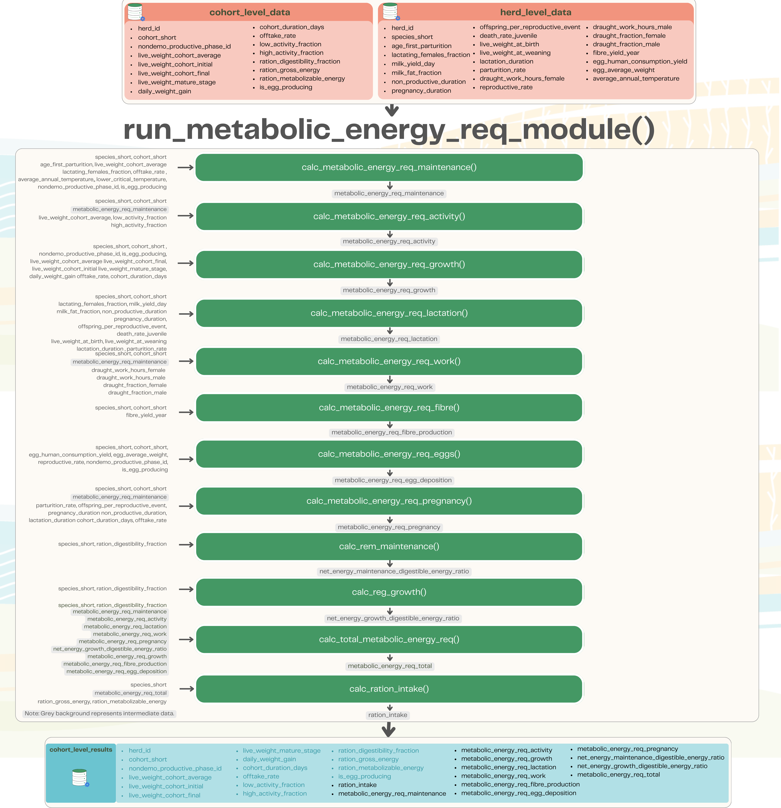
Enteric Emissions Module
See run_emissions_enteric_module()
for full documentation.
Overview of the GLEAM enteric emissions module with functions, input and output:
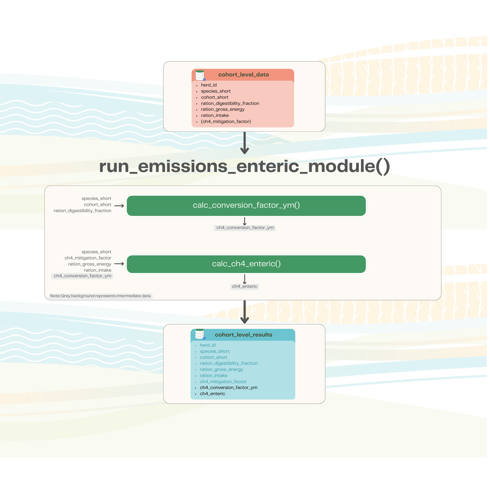
The calculation pipeline consists of the following steps:
- If
ch4_mitigation_factoris not provided in the input data, it is set to1(no mitigation). - The methane conversion factor (ym) is computed using
calc_conversion_factor_ym(). - Daily enteric methane emissions are computed using
calc_ch4_enteric().
Nitrogen Balance Module
See run_nitrogen_balance_module()
for full documentation.
Computes cohort-level daily nitrogen intake, retention, and excretion (kg N/head/day) following the IPCC Tier 2 approach.
Overview of the GLEAM nitrogen balance module with functions, input and output:
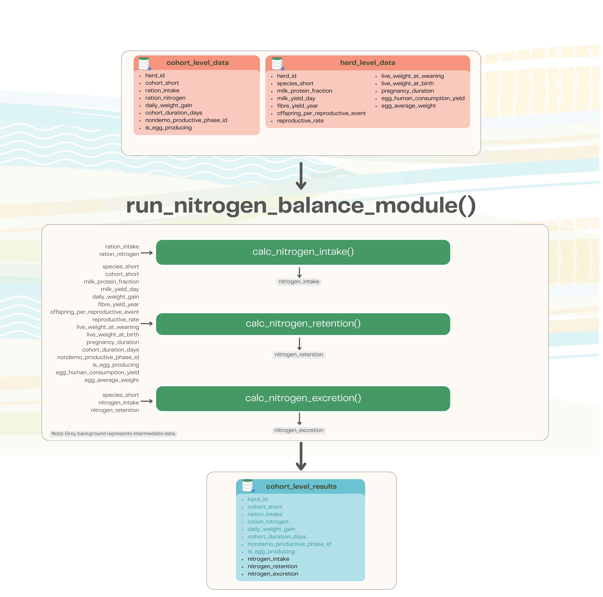
The following calculation sequence is applied:
- Daily nitrogen intake is computed from
ration_intakeandration_nitrogenusingcalc_nitrogen_intake(). - Daily nitrogen retention (in body tissues and products such as
growth, pregnancy, milk, and eggs) is computed using
calc_nitrogen_retention(). - Daily nitrogen excretion is computed as intake minus retention using
calc_nitrogen_excretion().
The module appends nitrogen_intake,
nitrogen_retention, and nitrogen_excretion to
the cohort table (kg N/head/day), preserving supplied phase identifiers
for downstream manure calculations.
Manure Emissions Module
See run_emissions_manure_module()
for full documentation.
Computes cohort-level greenhouse gas emissions from manure management systems (MMS) following the IPCC Tier 2 methodology, using volatile solids (VS), MMS allocation fractions, and MMS-specific emission factors.
Overview of the GLEAM manure emissions module with functions, input and output:
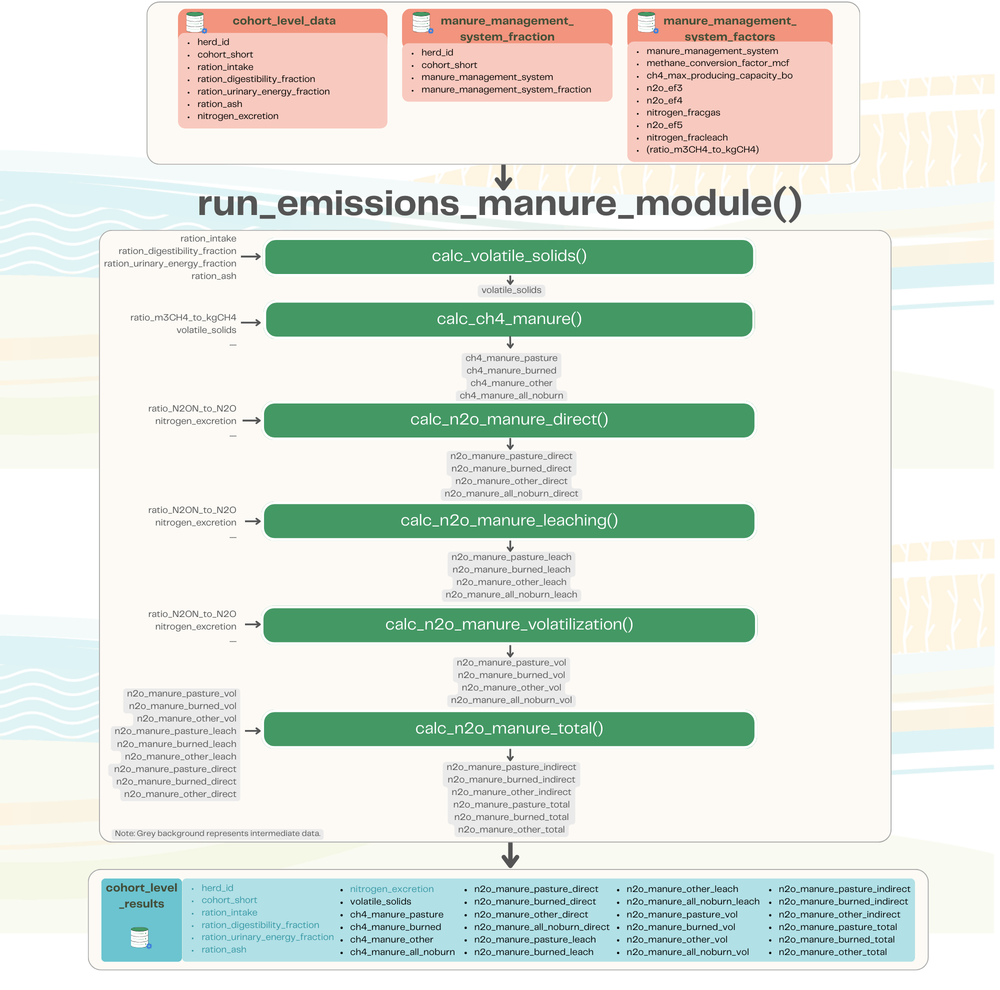
For each herd_id, the set of MMS identifiers must be
consistent between the manure_management_system_fraction
and manure_management_system_factors tables.
nondemo_productive_phase_id is optional in the manure
fraction table. If omitted or entirely NA, fractions are
matched by herd_id and cohort_short and reused
for each phase of that cohort. If the fractions specify phases, the
cohort table must also contain the phase identifier, and matching
includes nondemo_productive_phase_id. Input cohort rows and
phase identifiers are preserved in the results.
The following calculation sequence is applied:
-
Volatile solids (VS) excretion is computed from
feed ration nutritional parameters (digestibility, urinary energy, ash)
using
calc_volatile_solids()(IPCC 2006/2019, Eq. 10.24). -
Methane (CH₄) emissions from manure management are
computed from VS and MMS-specific factors (MCF and B₀), reported by MMS
group (pasture, burned, other) using
calc_ch4_manure()(IPCC 2006/2019, Eq. 10.23). -
Direct N₂O emissions are computed from nitrogen
excretion and MMS-specific EF3 values, reported by MMS group using
calc_n2o_manure_direct()(IPCC 2006/2019, Eq. 10.25). -
Indirect N₂O emissions are the sum of:
- Volatilisation-driven N₂O from MMS-specific nitrogen losses
(FracGas) and EF4 using
calc_n2o_manure_volatilization()(IPCC 2006/2019, Eq. 10.26–10.28). - Leaching/runoff-driven N₂O from MMS-specific nitrogen losses
(FracLeach) and EF5 using
calc_n2o_manure_leaching()(IPCC 2006/2019, Eq. 10.27–10.29).
- Volatilisation-driven N₂O from MMS-specific nitrogen losses
(FracGas) and EF4 using
-
Total N₂O (direct + indirect) is summed by MMS
group using
calc_n2o_manure_total().
The returned cohort table contains volatile_solids and
the methane and nitrous oxide emission columns for pasture, burned, and
other MMS groups. Emission values are expressed in kg gas/head/day; herd
totals over the assessment period are calculated by the aggregation
module.
Feed Production Emissions Module
See run_emissions_ration_module()
for full documentation.
Computes cohort-level average greenhouse gas emission factors from feed production by weighting the emission factors of individual feed components by diet composition. Returns diet-level average GHG emission factors by gas and emission source for each cohort.
The module joins ration shares with feed emission factors by
feed_id and applies the following calculation sequence:
- Merge ration shares with emission factors at the feed-component level.
-
Compute feed-component contributions (row-wise) for
each emission source by multiplying the ration share of each feed
component (
feed_ration_fraction) by the corresponding emission factor:- CO₂ from fertilizer manufacture —
calc_co2_ration_fertilizer() - CO₂ from pesticide manufacture —
calc_co2_ration_pesticides() - CO₂ from on-field crop activities —
calc_co2_ration_crop_activities() - CO₂ from land-use change (no peat) —
calc_co2_ration_luc_nopeat() - CO₂ from land-use change (peat) —
calc_co2_ration_luc_peat() - N₂O from fertilizer use —
calc_n2o_ration_fertilizer() - N₂O from manure applied to soil —
calc_n2o_ration_manure() - N₂O from crop residues —
calc_n2o_ration_crop_residues() - CH₄ from rice cultivation —
calc_ch4_ration_rice()
- CO₂ from fertilizer manufacture —
- Sum component contributions within each cohort to obtain diet-level average emission factors (g gas/kg DM).
Overview of the GLEAM feed production emissions module with functions, input and output:
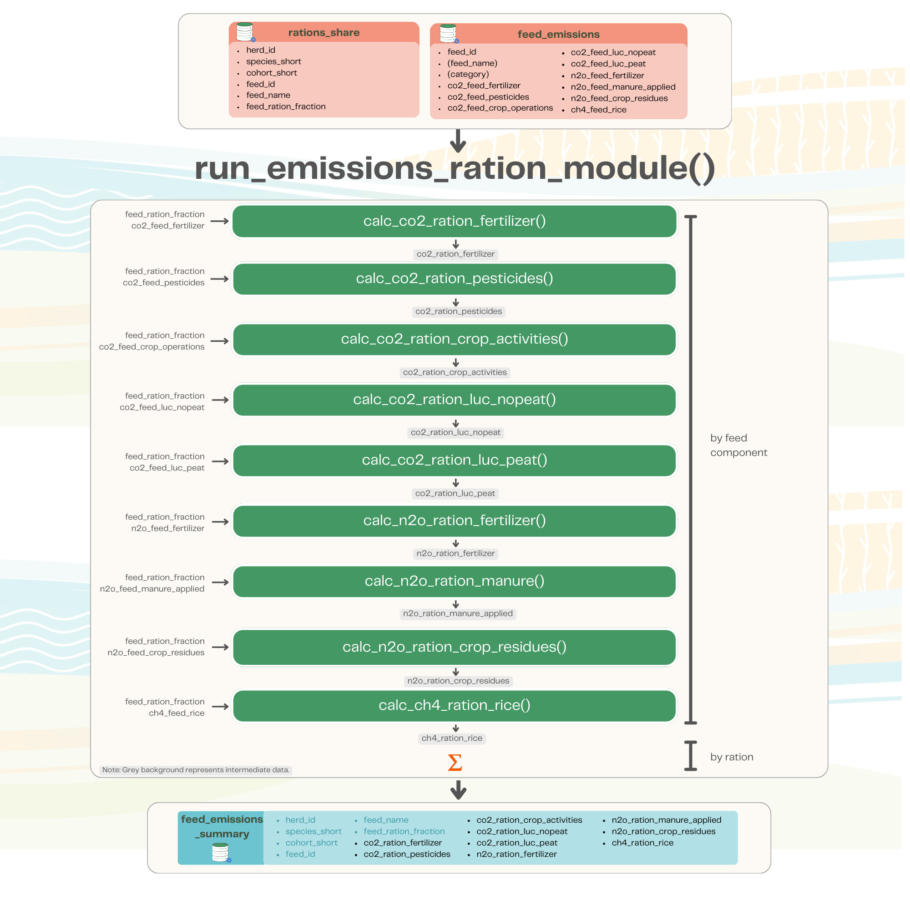
Production Module
See run_production_module()
for full documentation.
Computes cohort-level production outputs over the assessment period by combining cohort-level herd structure inputs with herd-level production parameters. The module returns milk, fibre, meat, and food-egg outputs for each cohort.
Overview of the GLEAM production module with functions, input and output:
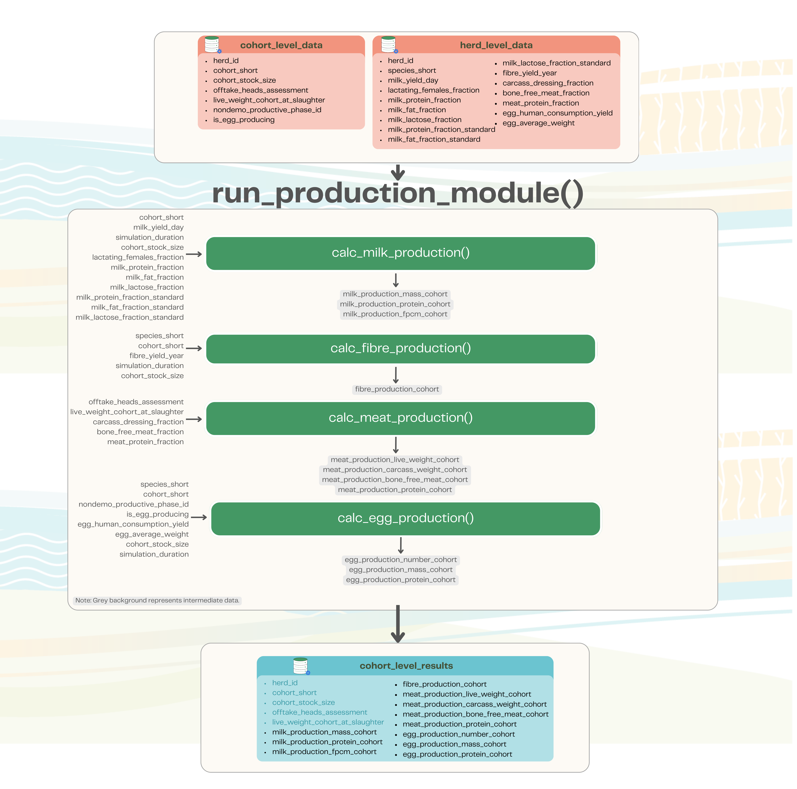
The following calculation sequence is applied:
- Milk outputs (raw mass, protein, and fat-protein-corrected milk —
FPCM) are computed using
calc_milk_production(). - Fibre outputs (wool, cashmere, mohair) are computed using
calc_fibre_production(). - Meat outputs (live weight, carcass weight, bone-free meat, and
protein) are computed from
offtake_heads_assessmentand slaughter weight usingcalc_meat_production(). - Food-egg outputs (number, mass, and protein) are computed using
calc_egg_production().
For chickens (CHK), the model distinguishes between
food eggs (produced for human consumption) and
reproductive eggs (used for breeding).
Food-egg production is calculated only when
is_egg_producing = TRUE, which is supported for adult
females (FA) and non-demographic females (FN)
in productive phase 2.
Emission Allocation Module
See run_allocation_module()
for full documentation.
Overview of the GLEAM emissions allocation module with functions, input and output:
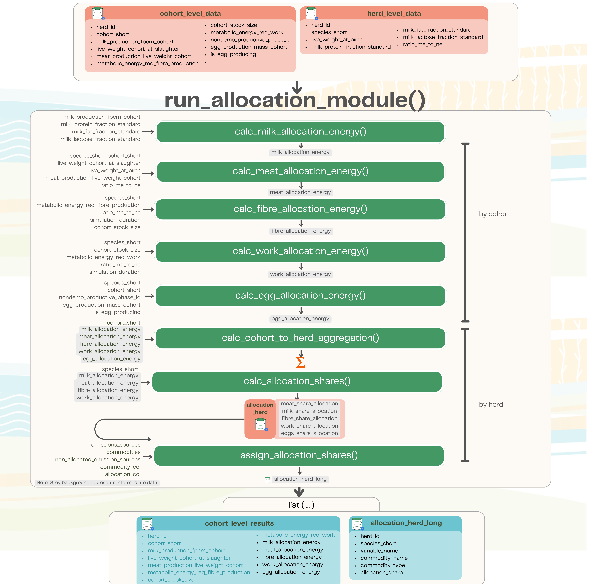
The pipeline consists of the following steps:
-
Cohort-level energy allocation terms are computed
for each commodity:
- Meat —
calc_meat_allocation_energy() - Milk —
calc_milk_allocation_energy() - Fibre —
calc_fibre_allocation_energy() - Work (draught power) —
calc_work_allocation_energy() - Eggs —
calc_egg_allocation_energy()
- Meat —
-
All five cohort-level energy terms, including
egg_allocation_energy, are aggregated to herd level usingcalc_cohort_to_herd_aggregation(). -
Herd-level allocation shares are computed using
calc_allocation_shares(), includingeggs_share_allocation. -
Allocation shares are reshaped to long format and
assigned to emission sources using
assign_allocation_shares().
Aggregation and Reporting Module
See run_aggregation_module()
for full documentation.
This is the final step of the GLEAM pipeline. It generates final herd-level results by aggregating key cohort-level outputs, scaling variables over the assessment duration, allocating emissions to commodities, and converting CH₄ and N₂O emissions to CO₂-equivalents (CO₂eq) using selected 100-year Global Warming Potential (GWP-100) factors.
Overview of the GLEAM aggregation module with functions, input and output:
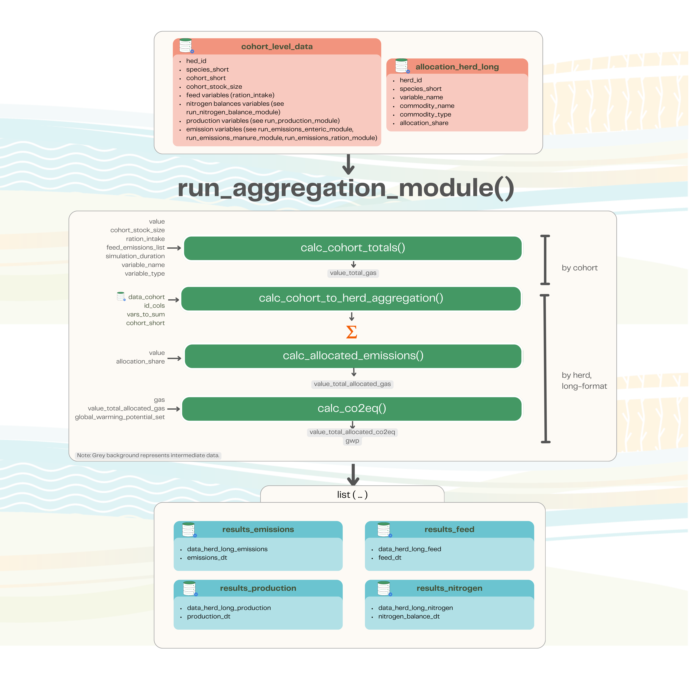
The following calculation sequence is applied:
- Cohort-level variables are reshaped from wide to long format.
- Variables are classified into
"Feed","NitrogenBalance","Production", and"Emissions". - Cohort totals are calculated using
calc_cohort_totals(). Production variables are retained as provided because they already cover the cohort and assessment period. Daily per-head emissions, feed intake, and nitrogen balance variables are multiplied bycohort_stock_sizeandsimulation_duration. Feed emission factors are additionally multiplied byration_intakeand divided by 1000 to convert grams to kilograms of gas. - Cohort totals are aggregated to herd level using
calc_cohort_to_herd_aggregation(). - Herd-level emissions are merged with commodity allocation shares.
- Emissions are allocated to commodities using
calc_allocated_emissions(). - Gas type (CH₄, N₂O, CO₂) is identified from the emission variable name.
- Allocated emissions are converted to CO₂eq using
calc_co2eq()and the selected GWP-100 option (AR4, AR5, or AR6). - Final output tables are produced summarising herd-level results for emissions, feed, production, and nitrogen balance.